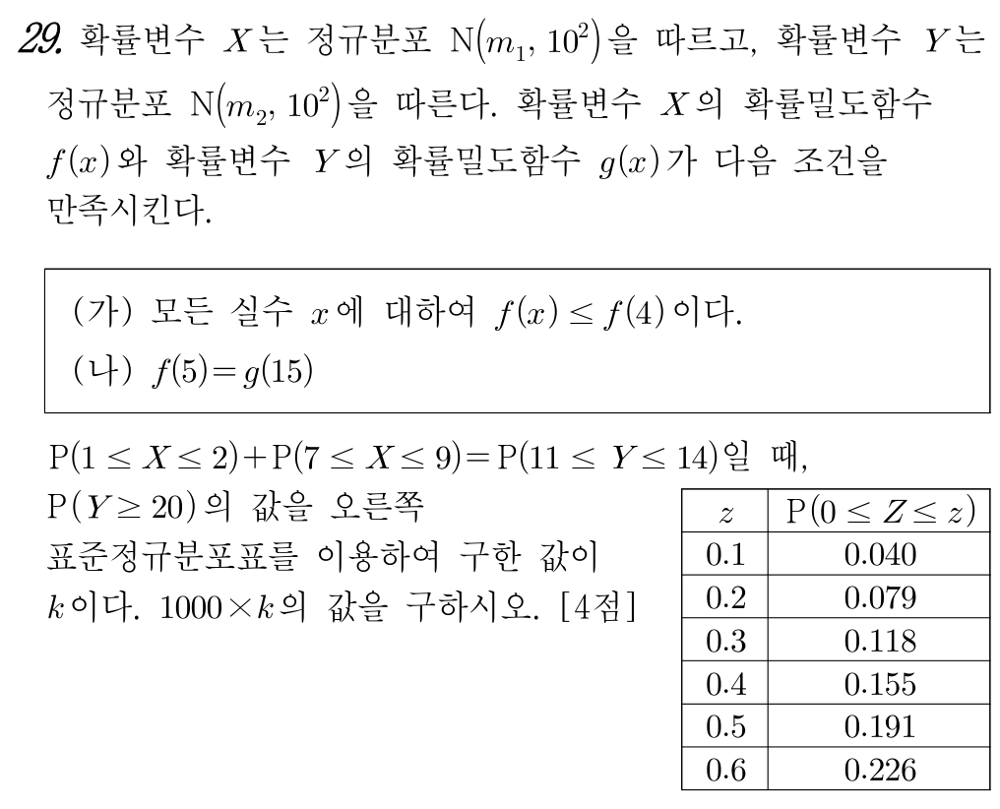

📘 [2026학년도 10월 고3 확통 29번] 두 정규분포의 대칭성과 확률밀도함수의 비교📘 [2026 AY Oct Exam Grade 12 Prob&Stats #29] Symmetry of Two Normal Distributions and Probability Density Comparison
초등학생도 1단계부터 차근차근 따라가면 수능·학력평가 본문항까지 스스로 풀 수 있는 단계별 디딤돌 퀴즈입니다.Elementary-to-advanced step-by-step scaffolding quiz. Instant scoring & explanations upon selection.

📋 원본 문항 핵심 요약 및 목표📋 Official Problem Summary & Objectives
두 정규분포의 대칭성과 확률밀도함수의 비교
조건 (가) $f(x)\le f(4)$에서 $m_1=4$를 찾고, 대칭 구간 합 $\mathrm{P}(6\le X\le 9)=\mathrm{P}(11\le Y\le 14)$와 조건 (나) $f(5)=g(15)$에서 $m_2=16$을 구하여 $1000k=345$ 도출하기
수학자료실의 PDF 자료는 페이지를 넘길 때마다 미분계수가 탄생하는 극한의 전 과정이 생생하게 드러납니다.
• [초기 상태] 곡선 $y=f(x)$ 위의 고정점 $\mathrm{P}(a, f(a))$와 멀리 떨어진 동점 $\mathrm{Q}(x, f(x))$를 잇는 초록색 할선(Secant)의 평균변화율 $\frac{f(x)-f(a)}{x-a}$을 그립니다.
• [프레임의 연속 이동] $x \to a$로 접근함에 따라, 곡선을 타고 미끄러지는 동점 $\mathrm{Q}$와 함께 초록색 할선이 연속적으로 회전합니다.
• [극한의 합일] 마지막 순간, 초록색 할선이 빨간색 접선(Tangent)과 일치하며 순간변화율 $m = \lim_{x\to a}\frac{f(x)-f(a)}{x-a}$에 도달합니다.
• [수학적 의미] 미분은 형식적인 수식 연산이 아니라, 두 점 사이의 할선이 한 점에서의 접선으로 녹아드는 기하학적 수렴 과정임을 하단 자료로 확인해 보세요.
The archive's flipbook proof materials demonstrate how fundamental mathematical principles converge smoothly frame by frame. Explore the interactive dynamic geometry applets below.
🔰 제0단계 · 수학 기호 번역기🔰 Step 0 · Mathematical Symbol Translator
🔰 1단계 · [초등 산봉우리 꼭대기 찾기] 조건 (가) $f(x) \le f(4)$에서 평균 $m_1$ 구하기🔰 Step 1 · [Elementary Peak Finding] Finding the mean $m_1$ from $f(x) \le f(4)$
먼저 알아야 할 지식
초등학교 그래프 읽기처럼 정규분포의 확률밀도함수 $f(x)$는 평균 $x = m_1$에서 가장 높은 산봉우리(최댓값)를 가지는 좌우 대칭 종 모양 곡선입니다! 조건 (가)에서 '모든 실수 $x$에 대하여 $f(x) \le f(4)$'라는 뜻은 $x = 4$에서의 높이가 가장 높다는 뜻입니다.🌿 2단계 · [초등 수직선 거울 대칭] 평균 $m_1 = 4$를 기준으로 구간 $[1, 2]$를 반대쪽으로 접기🌿 Step 2 · [Mirror Symmetry on a Number Line] Reflecting $[1, 2]$ across $m_1 = 4$
먼저 알아야 할 지식
수직선에서 중심 $4$를 거울 삼아 왼쪽의 숫자를 오른쪽으로 똑같은 거리만큼 옮겨 봅시다.- $2$는 $4$보다 왼쪽으로 $2$칸($4 - 2 = 2$) 떨어져 있으므로, 오른쪽으로 $2$칸 가면 $4 + 2 = 6$입니다.
- $1$은 $4$보다 왼쪽으로 $3$칸($4 - 1 = 3$) 떨어져 있으므로, 오른쪽으로 $3$칸 가면 $4 + 3 = 7$입니다.
🌱 3단계 · [구간 이어붙이기] $\mathrm{P}(6 \le X \le 7) + \mathrm{P}(7 \le X \le 9)$를 하나의 구간으로 합치기🌱 Step 3 · [Joining Intervals] Merging $\mathrm{P}(6 \le X \le 7) + \mathrm{P}(7 \le X \le 9)$
먼저 알아야 할 지식
2단계 덕분에 문제의 좌변 $\mathrm{P}(1 \le X \le 2) + \mathrm{P}(7 \le X \le 9)$는 $\mathrm{P}(6 \le X \le 7) + \mathrm{P}(7 \le X \le 9)$가 되었습니다! $6$부터 $7$까지의 넓이와 $7$부터 $9$까지의 넓이를 이어붙이면 바로 $6$부터 $9$까지의 하나의 연결된 구간 넓이가 됩니다.🌱 4단계 · [조건 (나) $f(5) = g(15)$ 해석] $m_2$의 후보 두 개 찾기🌱 Step 4 · [Condition (나) $f(5) = g(15)$] Finding the two candidates for $m_2$
먼저 알아야 할 지식
두 확률변수 $X \sim \mathrm{N}(4, 10^2)$과 $Y \sim \mathrm{N}(m_2, 10^2)$는 표준편차가 $10$으로 똑같기 때문에 종 모양 곡선의 생김새가 완전히 합동입니다! 따라서 두 곡선의 높이가 같으려면($f(5) = g(15)$), 각각의 평균으로부터 떨어진 거리가 같아야 합니다:$$|15 - m_2| = |5 - 4| = 1$$🌳 5단계 · [평균 $m_2$ 확정] $\mathrm{P}(6 \le X \le 9) = \mathrm{P}(11 \le Y \le 14)$로 $m_2 = 16$ 결정하기🌳 Step 5 · [Determining $m_2$] Using $\mathrm{P}(6 \le X \le 9) = \mathrm{P}(11 \le Y \le 14)$ to fix $m_2 = 16$
먼저 알아야 할 지식
3단계에서 좌변의 구간 $[6, 9]$는 평균 $m_1 = 4$로부터 거리가 $2 \sim 5$만큼 떨어진 구간이었습니다. 모양이 똑같은 $Y$에서도 우변 $\mathrm{P}(11 \le Y \le 14)$의 넓이가 같으려면, 구간 $[11, 14]$ 역시 평균 $m_2$로부터 거리가 $2 \sim 5$만큼 떨어진 구간이어야 합니다!- 만약 $m_2 = 14$이면 구간 $[11, 14]$는 평균 $14$로부터 거리가 $0 \sim 3$이어서 넓이가 다릅니다(탈락!).
- 만약 $m_2 = 16$이면 $16 - 14 = 2$, $16 - 11 = 5$이므로 평균 $16$으로부터 거리가 정확히 $2 \sim 5$가 되어 일치합니다!
🌳 6단계 · [표준화 $Z$ 변환] $Y \sim \mathrm{N}(16, 10^2)$에서 $\mathrm{P}(Y \ge 20)$을 표준정규분포로 바꾸기🌳 Step 6 · [Standardization] Converting $\mathrm{P}(Y \ge 20)$ using $Z = \dfrac{Y - 16}{10}$
먼저 알아야 할 지식
이제 $Y$의 평균 $m_2 = 16$과 표준편차 $\sigma_2 = 10$을 모두 알았습니다! 구하려는 확률 $\mathrm{P}(Y \ge 20)$을 표준정규분포표로 읽으려면 $Y$에서 평균 $16$을 빼고 표준편차 $10$으로 나눈 표준화 변수 $Z = \dfrac{Y - 16}{10}$으로 바꿉니다.💎 7단계 · [표준정규분포표 읽기] 오른쪽 꼬리 확률 $k = \mathrm{P}(Z \ge 0.4)$ 구하기💎 Step 7 · [Reading the Normal Table] Computing the upper tail $k = \mathrm{P}(Z \ge 0.4)$
먼저 알아야 할 지식
표준정규분포 곡선에서 $Z \ge 0$인 오른쪽 반쪽 전체의 넓이는 $0.5$입니다. 문제의 표에서 가운데 부분 넓이 $\mathrm{P}(0 \le Z \le 0.4) = 0.155$이므로, $0.4$보다 오른쪽 꼬리 부분의 넓이 $k = \mathrm{P}(Z \ge 0.4)$는 $0.5$에서 $0.155$를 빼면 됩니다!🏆 8단계 · [최종 정답 완성] $1000 \times k$의 값 구하기🏆 Step 8 · [Final Synthesis] Computing $1000 \times k$
먼저 알아야 할 지식
$k = 0.345$에 $1000$을 곱하면 소수점이 오른쪽으로 세 칸 이동하여 자연수 $345$가 완성됩니다.📘 mathedu
📝 먼저 이름을 입력하세요
이름을 입력해야 학습 기록이 저장됩니다.Your learning progress will be saved under this name.
🎯 최종 문제 + 상세 풀이🎯 Final Official Exam Problem & Complete Solution
📋 [문제 분석 및 핵심 출제 의도]
본 문항은 정규분포 곡선의 최댓값(평균)과 대칭성을 이용하여 떨어진 두 구간의 확률 합을 하나의 연결된 구간 확률로 바꾼 뒤, 표준편차가 같은 두 정규분포의 평행이동 관계를 추론하는 문항입니다.
📐 [단계별 상세 풀이 전개]
1단계: 조건 (가)에서 평균 $m_1 = 4$ 도출 및 대칭 구간 결합
조건 (가)에서 모든 실수 $x$에 대하여 $f(x) \le f(4)$이므로 정규분포 $\mathrm{N}(m_1, 10^2)$의 대칭축(평균)은 $m_1 = 4$입니다.
평균 $m_1 = 4$에 대한 대칭성에 의해 구간 $[1, 2]$를 $x = 4$에 대칭이동하면 $[6, 7]$이 되므로 $\mathrm{P}(1 \le X \le 2) = \mathrm{P}(6 \le X \le 7)$입니다. 따라서:
$$\mathrm{P}(1 \le X \le 2) + \mathrm{P}(7 \le X \le 9) = \mathrm{P}(6 \le X \le 7) + \mathrm{P}(7 \le X \le 9) = \mathrm{P}(6 \le X \le 9)$$
2단계: 조건 (나)와 구간 비교로 $m_2 = 16$ 확정
두 정규분포의 표준편차가 모두 $10$으로 같으므로, 조건 (나) $f(5) = g(15)$에서:
$$|15 - m_2| = |5 - 4| = 1 \implies m_2 = 14 \text{ 또는 } m_2 = 16$$
또한 $\mathrm{P}(6 \le X \le 9) = \mathrm{P}(11 \le Y \le 14)$에서 좌변의 구간 $[6, 9]$는 평균 $m_1 = 4$로부터 거리가 $2$ 이상 $5$ 이하인 구간입니다. 우변의 구간 $[11, 14]$도 평균 $m_2$로부터 거리가 $2$ 이상 $5$ 이하가 되려면 $m_2 = 16$이어야 합니다.
3단계: $\mathrm{P}(Y \ge 20)$ 표준화 계산
$Y \sim \mathrm{N}(16, 10^2)$이므로:
$$k = \mathrm{P}(Y \ge 20) = \mathrm{P}\left(Z \ge \frac{20 - 16}{10}\right) = \mathrm{P}(Z \ge 0.4) = 0.5 - 0.155 = 0.345$$
🪜 [초등 눈높이 디딤돌 전 단계(1단계~8단계) 완전 연결 상세 해설]
위 디딤돌 문제에서 밟아 온 $1$단계부터 $8$단계까지의 작은 조각들을 순서대로 연결하면 본문항의 풀이가 빈틈없이 완성됩니다.
- 🔰 1단계 · [초등 산봉우리 꼭대기 찾기] 조건 (가) $f(x) \le f(4)$에서 평균 $m_1$ 구하기
• 핵심 개념 및 원리: 초등학교 그래프 읽기처럼 정규분포의 확률밀도함수 $f(x)$는 평균 $x = m_1$에서 가장 높은 산봉우리(최댓값)를 가지는 좌우 대칭 종 모양 곡선입니다! 조건 (가)에서 '모든 실수 $x$에 대하여 $f(x) \le f(4)$'라는 뜻은 $x = 4$에서의 높이가 가장 높다는 뜻입니다.
• 단계 확인 정답 ($4$): $x = 4$에서 함숫값이 최대이므로 대칭축인 평균은 $m_1 = 4$입니다. - 🌿 2단계 · [초등 수직선 거울 대칭] 평균 $m_1 = 4$를 기준으로 구간 $[1, 2]$를 반대쪽으로 접기
• 핵심 개념 및 원리: 수직선에서 중심 $4$를 거울 삼아 왼쪽의 숫자를 오른쪽으로 똑같은 거리만큼 옮겨 봅시다.- $2$는 $4$보다 왼쪽으로 $2$칸($4 - 2 = 2$) 떨어져 있으므로, 오른쪽으로 $2$칸 가면 $4 + 2 = 6$입니다.
- $1$은 $4$보다 왼쪽으로 $3$칸($4 - 1 = 3$) 떨어져 있으므로, 오른쪽으로 $3$칸 가면 $4 + 3 = 7$입니다.
• 단계 확인 정답 ($6 \le X \le 7$): $4 + (4 - 2) = 6$, $4 + (4 - 1) = 7$이므로 구간 $6 \le X \le 7$과 확률이 같습니다. - 🌱 3단계 · [구간 이어붙이기] $\mathrm{P}(6 \le X \le 7) + \mathrm{P}(7 \le X \le 9)$를 하나의 구간으로 합치기
• 핵심 개념 및 원리: 2단계 덕분에 문제의 좌변 $\mathrm{P}(1 \le X \le 2) + \mathrm{P}(7 \le X \le 9)$는 $\mathrm{P}(6 \le X \le 7) + \mathrm{P}(7 \le X \le 9)$가 되었습니다! $6$부터 $7$까지의 넓이와 $7$부터 $9$까지의 넓이를 이어붙이면 바로 $6$부터 $9$까지의 하나의 연결된 구간 넓이가 됩니다.
• 단계 확인 정답 ($2$칸 ~ $5$칸): $6 - 4 = 2$칸, $9 - 4 = 5$칸이므로 평균 $4$로부터 거리가 $2$ 이상 $5$ 이하인 구간입니다! - 🌱 4단계 · [조건 (나) $f(5) = g(15)$ 해석] $m_2$의 후보 두 개 찾기
• 핵심 개념 및 원리: 두 확률변수 $X \sim \mathrm{N}(4, 10^2)$과 $Y \sim \mathrm{N}(m_2, 10^2)$는 표준편차가 $10$으로 똑같기 때문에 종 모양 곡선의 생김새가 완전히 합동입니다! 따라서 두 곡선의 높이가 같으려면($f(5) = g(15)$), 각각의 평균으로부터 떨어진 거리가 같아야 합니다:$$|15 - m_2| = |5 - 4| = 1$$
• 단계 확인 정답 ($14$ 또는 $16$): $15 - 1 = 14$ 또는 $15 + 1 = 16$이므로 $m_2$의 후보는 $14$ 또는 $16$입니다. - 🌳 5단계 · [평균 $m_2$ 확정] $\mathrm{P}(6 \le X \le 9) = \mathrm{P}(11 \le Y \le 14)$로 $m_2 = 16$ 결정하기
• 핵심 개념 및 원리: 3단계에서 좌변의 구간 $[6, 9]$는 평균 $m_1 = 4$로부터 거리가 $2 \sim 5$만큼 떨어진 구간이었습니다. 모양이 똑같은 $Y$에서도 우변 $\mathrm{P}(11 \le Y \le 14)$의 넓이가 같으려면, 구간 $[11, 14]$ 역시 평균 $m_2$로부터 거리가 $2 \sim 5$만큼 떨어진 구간이어야 합니다!- 만약 $m_2 = 14$이면 구간 $[11, 14]$는 평균 $14$로부터 거리가 $0 \sim 3$이어서 넓이가 다릅니다(탈락!).
- 만약 $m_2 = 16$이면 $16 - 14 = 2$, $16 - 11 = 5$이므로 평균 $16$으로부터 거리가 정확히 $2 \sim 5$가 되어 일치합니다!
• 단계 확인 정답 ($16$): $m_2 = 14 + 2 = 16$일 때 구간 $[11, 14]$는 평균 $16$으로부터 거리가 $2 \sim 5$가 되어 좌변과 넓이가 완전히 같아집니다. - 🌳 6단계 · [표준화 $Z$ 변환] $Y \sim \mathrm{N}(16, 10^2)$에서 $\mathrm{P}(Y \ge 20)$을 표준정규분포로 바꾸기
• 핵심 개념 및 원리: 이제 $Y$의 평균 $m_2 = 16$과 표준편차 $\sigma_2 = 10$을 모두 알았습니다! 구하려는 확률 $\mathrm{P}(Y \ge 20)$을 표준정규분포표로 읽으려면 $Y$에서 평균 $16$을 빼고 표준편차 $10$으로 나눈 표준화 변수 $Z = \dfrac{Y - 16}{10}$으로 바꿉니다.
• 단계 확인 정답 ($0.4$): $\dfrac{20 - 16}{10} = \dfrac{4}{10} = 0.4$이므로 $\mathrm{P}(Y \ge 20) = \mathrm{P}(Z \ge 0.4)$입니다. - 💎 7단계 · [표준정규분포표 읽기] 오른쪽 꼬리 확률 $k = \mathrm{P}(Z \ge 0.4)$ 구하기
• 핵심 개념 및 원리: 표준정규분포 곡선에서 $Z \ge 0$인 오른쪽 반쪽 전체의 넓이는 $0.5$입니다. 문제의 표에서 가운데 부분 넓이 $\mathrm{P}(0 \le Z \le 0.4) = 0.155$이므로, $0.4$보다 오른쪽 꼬리 부분의 넓이 $k = \mathrm{P}(Z \ge 0.4)$는 $0.5$에서 $0.155$를 빼면 됩니다!
• 단계 확인 정답 ($0.345$): $0.500 - 0.155 = 0.345$입니다. - 🏆 8단계 · [최종 정답 완성] $1000 \times k$의 값 구하기
• 핵심 개념 및 원리: $k = 0.345$에 $1000$을 곱하면 소수점이 오른쪽으로 세 칸 이동하여 자연수 $345$가 완성됩니다.
• 단계 확인 정답 ($345$): $1000 \times 0.345 = 345$입니다.
✨ [정답 도출 및 실전 점검 포인트]
따라서 $1000 \times k = 1000 \times 0.345 =$ $345$입니다.
📋 [Problem Analysis & Core Concepts]
This problem uses the peak and symmetry of normal density curves with equal standard deviations ($\sigma = 10$) to merge disjoint probability intervals and determine $m_1$ and $m_2$.
📐 [Step-by-Step Rigorous Derivation]
Step 1: Symmetry of $X$
From $f(x) \le f(4)$, the mean is $m_1 = 4$. Reflecting $[1, 2]$ across $4$ gives $[6, 7]$, so $\mathrm{P}(1 \le X \le 2) + \mathrm{P}(7 \le X \le 9) = \mathrm{P}(6 \le X \le 9) = \mathrm{P}(11 \le Y \le 14)$.
Step 2: Mean $m_2$ of $Y$ and final probability
From $f(5) = g(15)$ with $\sigma_1 = \sigma_2 = 10$, we have $|15 - m_2| = |5 - 4| = 1 \implies m_2 \in \{14, 16\}$. Since $[6, 9]$ is at distance $2$ to $5$ from $4$, $[11, 14]$ must be at distance $2$ to $5$ from $m_2$, fixing $m_2 = 16$. Thus:
$$k = \mathrm{P}(Y \ge 20) = \mathrm{P}\left(Z \ge \frac{20-16}{10}\right) = \mathrm{P}(Z \ge 0.4) = 0.5 - 0.155 = 0.345$$
🪜 [Complete Step-by-Step Scaffolding Walkthrough (Steps 1–8)]
Connecting each elementary-grounded scaffolding step from Step 1 to Step 8 completes the entire derivation without any logical gaps:
- 🔰 Step 1 · [Elementary Peak Finding] Finding the mean $m_1$ from $f(x) \le f(4)$
• Core Principle: Like reading the highest peak of a hill in elementary math, a normal density curve $f(x)$ reaches its maximum at the mean $x = m_1$. Condition (가) $f(x) \le f(4)$ tells us the highest peak is at $x = 4$.
• Step Verification ($4$): The maximum occurs at the mean, so $m_1 = 4$. - 🌿 Step 2 · [Mirror Symmetry on a Number Line] Reflecting $[1, 2]$ across $m_1 = 4$
• Core Principle: Reflecting across $m_1 = 4$: $2$ ($2$ units left of $4$) maps to $4 + 2 = 6$, and $1$ ($3$ units left of $4$) maps to $4 + 3 = 7$. Thus $\mathrm{P}(1 \le X \le 2) = \mathrm{P}(6 \le X \le 7)$.
• Step Verification ($6 \le X \le 7$): Reflecting $[1, 2]$ across $4$ gives $[6, 7]$. - 🌱 Step 3 · [Joining Intervals] Merging $\mathrm{P}(6 \le X \le 7) + \mathrm{P}(7 \le X \le 9)$
• Core Principle: Since $[6, 7]$ and $[7, 9]$ meet at $7$, their probabilities add up to a single continuous interval $\mathrm{P}(6 \le X \le 9)$.
• Step Verification ($2$칸 ~ $5$칸): $6 - 4 = 2$ and $9 - 4 = 5$, so it lies from $2$ to $5$ units from the mean. - 🌱 Step 4 · [Condition (나) $f(5) = g(15)$] Finding the two candidates for $m_2$
• Core Principle: Because $X$ and $Y$ share the same standard deviation $\sigma = 10$, their density curves are congruent. Thus $f(5) = g(15)$ holds iff $15$ is the same distance from $m_2$ as $5$ is from $m_1 = 4$: $|15 - m_2| = |5 - 4| = 1$.
• Step Verification ($14$ 또는 $16$): $m_2 = 14$ or $m_2 = 16$. - 🌳 Step 5 · [Determining $m_2$] Using $\mathrm{P}(6 \le X \le 9) = \mathrm{P}(11 \le Y \le 14)$ to fix $m_2 = 16$
• Core Principle: For $\mathrm{P}(6 \le X \le 9) = \mathrm{P}(11 \le Y \le 14)$ to hold, $[11, 14]$ must also lie at distance $2$ to $5$ from $m_2$. Testing the candidates: $m_2 = 14$ gives distance $0$ to $3$ (invalid), whereas $m_2 = 16$ gives distance $16 - 14 = 2$ to $16 - 11 = 5$ (valid!).
• Step Verification ($16$): $m_2 = 16$. - 🌳 Step 6 · [Standardization] Converting $\mathrm{P}(Y \ge 20)$ using $Z = \dfrac{Y - 16}{10}$
• Core Principle: With $m_2 = 16$ and $\sigma_2 = 10$, standardize $Y = 20$ via $Z = \dfrac{20 - 16}{10}$.
• Step Verification ($0.4$): $\dfrac{4}{10} = 0.4$. - 💎 Step 7 · [Reading the Normal Table] Computing the upper tail $k = \mathrm{P}(Z \ge 0.4)$
• Core Principle: Since $\mathrm{P}(Z \ge 0) = 0.5$ and the table gives $\mathrm{P}(0 \le Z \le 0.4) = 0.155$, the tail probability is $k = 0.5 - 0.155$.
• Step Verification ($0.345$): $0.500 - 0.155 = 0.345$. - 🏆 Step 8 · [Final Synthesis] Computing $1000 \times k$
• Core Principle: Multiply $k = 0.345$ by $1000$ to obtain the final answer $345$.
• Step Verification ($345$): $1000 \times 0.345 = 345$.
✨ [Final Answer & Practical Tips]
Therefore, $1000k =$ $345$.
(가) 모든 실수 $x$에 대하여 $f(x) \le f(4)$이다.
(나) $f(5) = g(15)$
$\mathrm{P}(1 \le X \le 2) + \mathrm{P}(7 \le X \le 9) = \mathrm{P}(11 \le Y \le 14)$일 때, $\mathrm{P}(Y \ge 20)$의 값을 표준정규분포표를 이용하여 구한 값이 $k$이다. $1000 \times k$의 값을 구하시오. (단, $\mathrm{P}(0 \le Z \le 0.4) = 0.155$) [4점]
(가) $f(x) \le f(4)$ for all real $x$.
(나) $f(5) = g(15)$.
Given $\mathrm{P}(1 \le X \le 2) + \mathrm{P}(7 \le X \le 9) = \mathrm{P}(11 \le Y \le 14)$, let $k = \mathrm{P}(Y \ge 20)$ using $\mathrm{P}(0 \le Z \le 0.4) = 0.155$. Find $1000 \times k$. [4 points]
 📚 수학자료실 공식 연계 심층 탐구
📚 수학자료실 공식 연계 심층 탐구
이 문제와 관련된 수학적 원리를 수학자료실의 시각적 동적 기하 조작 및 원리 증명 자료와 함께 더 깊이 탐구해보세요.
🎉 완료!🎉 Completed!